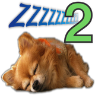
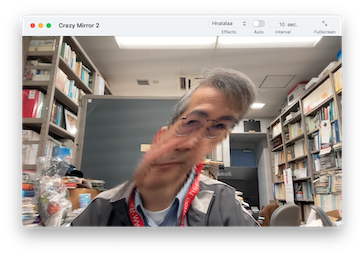

|  | くれぃじぃみらぁ2 |  |
| © Tatsuo Unemi, 2023. |
フルHDカメラ と macOS 11 または上位の OS の上で動く役立たずなアプリです。 Intel と Apple Silicon どちらの CPU でも動作しますが、 Intel製 GPU では、複雑な効果を滑らかに実行するには力不足かもしれません。 元祖版 は 2005年 (平成17年) に iSight カメラと QuickTime API を使って開発されました。 その後、新しい OS では動かなくなってしまったのですが、プログラムを一から作り直し、ついに復活しました。 Metal シェーダー言語のコードを含んでいます。
仕事で疲れを感じたらこのソフトを立ち上げてください。 ゆっくり首を回して、肩を上下に動かし、軽くマバタキをしてから、 ３回深呼吸をして下さい。
まだ疲れを感じる場合は、 ウィンドウを上の方にあるツールバーの中の「こうか」のボタンをクリックして、別のモードを試してみましょう。
それで気分がどうなるかっていわれても何の保証もできませんけど...
下のボタンをクリックすると、アプリのファイルが入ったディスクイメージファイルをダウンロードできます。
ソースコードに興味のある方は、 GitHub レポジトリ をのぞいてみてください。